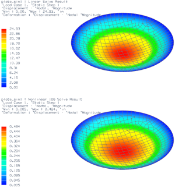

Display the results for both solutions
|
Results |
 Upper and Lower (Layout group)
Upper and Lower (Layout group)
 Layout Settings (Layout group)
Layout Settings (Layout group)
-
 User Selected Viewport
User Selected Viewport -
OK
 Post-Processing Navigator
Post-Processing Navigator
-
 Linear Solve
Linear Solve -
 Load
Load -
Nonlinear 106 Solve
-
Load
-
 Linear Solve (expand)
Linear Solve (expand)
-
 Displacement - Nodal
Displacement - Nodal -
 (upper viewport)
(upper viewport)
-
Nonlinear 106 Solve (expand)
-
Displacement - Nodal
-
 (lower viewport)
(lower viewport)
-

-
Viewing the contour plots suggests that the deformation predicted by both the linear and nonlinear models are nearly identical. However, the values in the color bar indicate that a substantial difference exists. By default, the contour plots are shown with the maximum deformation scaled to 10% of the model size. As such, both contour plots appear nearly identical. In the next step, you display the contour plots using an absolute scale for the deformation.